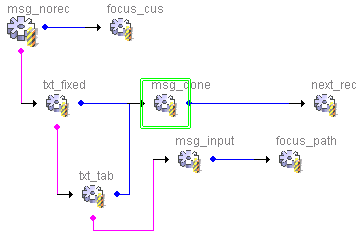

|
3.1 jLIVE Builder™ 程式設計概念 (programming concept) 物件導向程式設計 (object oriental programming) jLIVE Builder™ 是100% pure Java™ 的網際網路應用程式快速開發系統 (rapid application development)。程式設計師以物件導向 (object oriental programming) 及 事件驅動 (event drive) 的概念，在完全視覺化的設計平台 (fully visual design framework) 中，以滑鼠拖曳元件 (components)， 設定屬性 (properties) 及啟動事件 (event) 的方式架構應用程式。所有設計邏輯、流程、元件、資料來源等，皆會記錄在 XML 檔中，再由 XML 檔產生 Java™ 原始程式碼 (source code)，建立執行檔時再編譯成 Java™ class 檔。
物件導向程式設計 (object oriental programming) jLIVE Builder™ 以物件導向的理念，讓程式設計師快速的開發應用程式，以物件構築程式不但設計容易 (design)，也易於維護 (maintain) 及拓展 (extent) 與重用 (reuse)。在 jLIVE Builder™ 的設計平台中，從應用程式(application)、視窗畫面(form) 到視窗畫面中的元件 (component)、事件 (event)，以至於報表 (report) 及列印元件 (printable component)，都是以物件的型式存在與使用。每一個物件都有屬性 (properties)，屬性包括物件的外觀顯示 (display format)、內部程序 (internal process)、資料關連 (data aware) 及系統或回應使用者操作的各種事件 (system and response event)。 應用程式設計時，設計師按系統需求佈建物件(create objects)，設定每個物件的初始屬性 (properties)，且按物件提供給使用者操作的介面 (UI)，連結各種回應的事件流程 (response event flow)，如此即可完成使用者操作視窗介面的程式設計。 應用程式執行時，物件的內部系統屬性，會按系統流程自動引發程序，例如：資料連結 (data binding) 會自行連結資料欄位 (data field)，且更新資料至目前資料記錄欄位值(record field)；而設計師設定的回應事件流程 (event flow)，則會根據使用者的操作，觸發相關的事件流程 (event flow)，而在事件流程中亦可進一步的更改執行期的物件屬性，使物件能反應各種作業需求，動態的改變屬性。 物件內涵 (object)
物件的模型/檢視/控制者(Model/View/Controller) 架構 (object Model/View/Controller architecture)
物件設計 (object design)
jLIVE Builder™ 的事件物件 (event) 是一段作業程序 (process)。一連串的事件物件串接，按啟動條件判斷 (fire condition) 是否執行程序 (perform process) 或者執行另一事件 (otherwise event)，以及該程序執行完後，是否執行下一事件 (next event) ，即是事件流程 (event flow) 。
事件流程的驅動則可由：
設計者可以按作業流程的需求，建立執行程序 (perform) 的事件流程 (event flow) ，再在需要此事件流程的物件上聯結 (link) 此事件。例圖為當使用者按下存檔鍵所引發的事件流程。 
Copyright © 2001~ 2004 Probe Technology . All Rights Reserved. Questions, comments, and suggestions to Service@probe.com.tw |